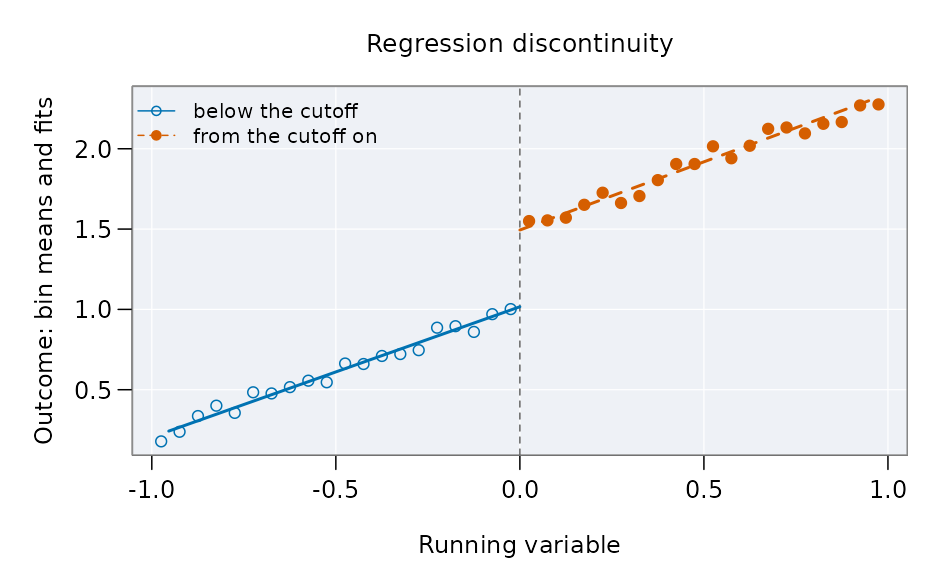
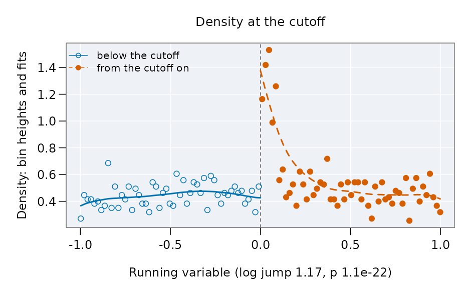

Causal estimates and regression discontinuity
Source:vignettes/causal-estimates.Rmd
causal-estimates.RmdDouble machine learning, balance, sensitivity of an estimate to what was not measured, and regression discontinuity.
Each section is one help page: what the function is for, the example
of its help page as it runs, and the plot of its result where the
package draws one. ?name gives the arguments and the value
in full.
Causal estimates
Double machine learning by cross-fitting
dmlx(): Estimates a causal parameter from orthogonal
scores whose nuisance functions (outcome regressions, propensities) are
learned out of fold: each fold’s predictions come from learners fitted
on the other folds, so that the estimate keeps root-n inference while
the learners are flexible (Chernozhukov et al. 2018). The learning, the
scores, the estimate and its standard error are all compiled; the folds
are the caller’s, so results can be matched with other software fold for
fold.
The U-learner of conditional average treatment effects
ulcate(): Estimates how the effect of a 0/1 treatment
varies with the covariates (Kunzel et al. 2019, sec. 2 and appendix):
the outcome regression m(x) = E[y | x] and the propensity
e(x) = P(d = 1 | x) are learned out of fold, as in
dmlx(), each fold predicted by learners fitted on the
others; the pseudo-outcome u = (y - m) / (d - e) has
expectation tau(x) given x when the treatment
is unconfounded given x; and tau is the
learner lrnt fitted to u on all the rows. The
mean of tau over the rows is reported as
ate.
set.seed(6)
n <- 400
x <- matrix(rnorm(n * 2), n)
d <- rbinom(n, 1, plogis(0.5 * x[, 1]))
y <- x[, 2] + d * (1 + x[, 1]) + rnorm(n)
fold <- sample(rep(1:4, length.out = n))
r <- ulcate(y, d, x, fold, lrn = "glm", lrnd = "glm")
r
#> ulcate: U-learner of the effect of d, 400 rows; mean effect 0.9368
#> tau from -2.416 to 3.844Design-based causal effects of a 0/1 treatment
cbatt(): The battery of estimators of the effect of a
0/1 treatment d on an outcome y given
covariates x that do not learn the nuisances by
cross-fitting: Hajek-normalised inverse probability weighting,
g-computation, subclassification on the propensity, nearest-neighbour
matching on the propensity with a caliper, and entropy balancing,
covariate-balancing weights for the effect on the treated.
dmlx() gives the cross-fitted ones (augmented inverse
probability weighting, targeted maximum likelihood, the interactive
model).
set.seed(1)
x <- matrix(rnorm(400), 200)
d <- rbinom(200, 1, plogis(x[, 1]))
y <- 2 * d + x[, 1] - x[, 2] + rnorm(200)
cbatt(y, d, x, reps = 99, seed = 1)$res
#> est se lo hi med n1 n0
#> 1 2.077253 0.1680322 1.747917 2.40659 NA 99 101
cbatt(y, d, x, est = "ebal", tgt = "att", reps = 99, seed = 1)$res
#> est se lo hi med n1 n0
#> 1 2.067763 0.1830696 1.708953 2.426573 NA 99 101
cbatt(y, d, x, est = "psm", tgt = "att", calip = 0.2)$res
#> est se lo hi med n1 n0
#> 1 2.011912 0.2508233 1.520307 2.503517 2.228522 99 101Covariate balance and overlap
smdbal(): The standardised mean difference and variance
ratio of each covariate between the treated and the controls, before and
after weighting, with a verdict by a threshold; and the overlap of the
propensity between the arms.
set.seed(1)
x <- data.frame(age = rnorm(200, 40, 10), prior = rpois(200, 2))
d <- rbinom(200, 1, plogis((x$age - 40) / 10))
smdbal(x, d)
#> smdbal: balanced at 0.1: FALSE; overlap: FALSE
#> var m1 m0 smd vr
#> age 44.748673 36.687615 0.95167893 1.4812747
#> prior 2.010989 2.119266 -0.07443683 0.7480863
#> min1 max1 min0 max0 out wmax
#> 0.07702527 0.9358613 0.04919905 0.7742637 0.09 12.98275
w <- cbatt(rnorm(200), d, x, est = "ebal", tgt = "att", reps = 0)$w
smdbal(x, d, w = w)$tab
#> var m1 m0 smd vr m1w m0w smdw
#> 1 age 44.748673 36.687615 0.95167893 1.4812747 44.748673 44.748673 -8.388583e-16
#> 2 prior 2.010989 2.119266 -0.07443683 0.7480863 2.010989 2.010989 -3.052964e-16
#> vrw
#> 1 1.9940894
#> 2 0.6845163E-values: how strong an unmeasured confounder must be
evlx(): The E-value of VanderWeele and Ding (2017): the
smallest strength of association, on the risk-ratio scale, that an
unmeasured confounder would need with both the treatment and the outcome
to explain away an estimate; and that of the confidence limit nearer the
null.
evlx(3.9, 1.8, 8.7)
#> rr evalue evlim
#> 3.900000 7.263034 3.000000
evlx(0.8, 0.71, 0.91, type = "hr")
#> rr evalue evlim
#> 0.8567726 1.6088913 1.3360826
evlx(0.5, type = "smd", sd = 0.1)
#> rr evalue evlim
#> 1.576173 2.529142 1.968037
# how strong a confounder must be to move a ratio of 3.9 down to 2
evlx(3.9, 1.8, 8.7, true = 2)
#> rr evalue evlim
#> 3.900000 3.311066 1.000000Rosenbaum sensitivity bounds for matched pairs
rswp(), rshl(): How strong would hidden
bias have to be to explain away a matched-pairs result? gam
is Gamma, the most the odds of treatment can differ within a pair
because of an unobserved covariate (1: no hidden bias).
rswp() gives the bounds on the one-sided p-value of
Wilcoxon’s signed-rank test at each Gamma (Rosenbaum 1987), from the
normal approximation, and the Gamma at which the upper bound reaches
alpha. rshl() gives the bounds on the
Hodges-Lehmann estimate of the effect (Rosenbaum 1993), computed exactly
from the Walsh averages, with no grid.
set.seed(1)
d <- rnorm(50, 0.5)
rswp(d, gam = c(1, 1.5, 2))
#> $p
#> gam plo pup
#> 1 1.0 7.807040e-06 7.807040e-06
#> 2 1.5 7.347225e-09 8.087079e-04
#> 3 2.0 7.012883e-12 8.061278e-03
#>
#> $gcrit
#> [1] 2.741017
#>
#> $t
#> [1] 1085
rshl(d, gam = c(1, 1.5, 2))
#> gam lo hi
#> 1 1.0 0.6526343 0.6526343
#> 2 1.5 0.4985346 0.7876529
#> 3 2.0 0.3952356 0.8803900Colliders of a directed acyclic graph
dagcol(): dagcol() lists the colliders of a
causal graph: every pair of causes a -> c <- b of a
common effect c. Conditioning on a collider (or on a
consequence of it), as a study of arrestees or of convicted people does,
opens a path between its causes and makes them associated when they are
not (Hernan and Robins 2020, ch. 8; see colarr()). A
collider whose causes are not adjacent is unshielded, a v-structure: the
v-structures and the skeleton of a graph are what the data can tell
apart (Verma and Pearl 1991).
# offending and mental illness both raise the chance of arrest; a study
# of arrestees conditions on the collider "arrest"
g <- dagcol(c("offend", "mental", "policing", "arrest"),
c("arrest", "arrest", "arrest", "record"))
g
#> dagcol: 3 colliders among 5 nodes, 3 unshielded (v-structures)
#> a c b shielded
#> offend arrest mental FALSE
#> offend arrest policing FALSE
#> mental arrest policing FALSE
dagcol(c("a", "b", "a"), c("c", "c", "b"), triple = c("a", "c", "b"))$query
#> collider shielded
#> TRUE TRUEGeneralisability weights for a trial
gensw(): The weights that make the units of a randomised
trial stand for a target population, and how far the trial is from it.
The data hold the trial’s units (s = 1) and a sample of the
target (s = 0) with the same covariates. The sampling score
ps, the chance of being in the trial given the covariates,
is a logistic regression of s on x, trimmed to
[trim, 1 - trim].
set.seed(8)
n <- 600
d <- data.frame(age = rnorm(n, 35, 10), prior = rpois(n, 1.5))
d$s <- rbinom(n, 1, plogis(-1 + 0.04 * (d$age - 35) + 0.3 * d$prior))
g <- gensw(d, "s", c("age", "prior"), target = "transport")
g
#> gensw: 223 trial units to transport to 377; logit SMD 0.47, Tipton's index 0.96, effective size 183.7
#> var target trial wtrial smd wsmd
#> age 33.012 36.075 32.979 0.3000 -0.003267
#> prior 1.358 1.771 1.317 0.3693 -0.036677
g$bal
#> var target trial wtrial smd wsmd
#> 1 age 33.01239 36.07538 32.979032 0.2999789 -0.003266946
#> 2 prior 1.35809 1.77130 1.317055 0.3693281 -0.036677349Transport a trial’s effect to a target population
trnsp(): The average treatment effect of a randomised
trial carried over to a target population whose covariates differ from
the trial’s, by the outcome model and by inverse odds weighting
(Dahabreh et al. 2020; Westreich et al. 2017). The data hold the trial’s
units (s = 1), with outcome and treatment, and a sample of
the target (s = 0), with the covariates only;
y and d are not read outside the trial and may
be NA there.
set.seed(9)
n <- 600
d <- data.frame(age = rnorm(n, 35, 10))
d$s <- rbinom(n, 1, plogis(-0.05 * (d$age - 35)))
d$t <- ifelse(d$s == 1, rbinom(n, 1, 0.5), NA)
d$y <- ifelse(d$s == 1, 0.5 * d$t + 0.02 * d$t * d$age + rnorm(n), NA)
trnsp(d, "y", "t", "s", "age", nboot = 100, seed = 1)
#> trnsp: the trial's effect transported to the rows outside it, 100 bootstrap draws (0 failed)
#> method est se lo hi
#> om 1.182 0.1282 0.9308 1.433
#> iow 1.197 0.1288 0.9442 1.449Targeted maximum likelihood for a randomised trial
rcttml(): The average treatment effect of a randomised
trial with adjustment for baseline covariates by targeted maximum
likelihood (Moore and van der Laan 2009): more precise than the
difference in means when the covariates predict the outcome, and
consistent whatever the outcome model, since the chance of treatment is
known by design.
set.seed(10)
n <- 300
d <- data.frame(prior = rpois(n, 2), age = runif(n, 18, 50),
t = rbinom(n, 1, 0.5))
d$days <- 30 - 6 * d$t + 3 * d$prior - 0.1 * d$age + rnorm(n, sd = 4)
rcttml(d, "days", "t", c("prior", "age"))
#> rcttml: gaussian outcome, 300 participants; targeted maximum likelihood, g-computation and the difference in means
#> method est se lo hi p
#> tmle -6.454 0.4857 -7.406 -5.502 2.775e-40
#> gcomp -6.454 NA NA NA NA
#> unadj -6.760 0.6640 -8.061 -5.459 2.424e-24
d$rearrest <- rbinom(n, 1, plogis(-1 - 0.6 * d$t + 0.4 * d$prior))
rcttml(d, "rearrest", "t", "prior", fam = "binomial")$tab
#> method est se lo hi p
#> 1 tmle -0.1443982 0.05330437 -0.2488729 -0.03992356 0.006749907
#> 2 gcomp -0.1443982 NA NA NA NA
#> 3 unadj -0.1570057 0.05574479 -0.2662635 -0.04774791 0.004854871Regression discontinuity
Regression discontinuity by local polynomials
rdloc(): Estimates the jump at a cutoff in a running
variable: the outcome’s (sharp design) or its ratio to the jump in the
treatment (fuzzy design), by local-linear fits on either side with
kernel weights, with the bandwidth of Imbens and Kalyanaraman (2012) or
one given, conventional and robust intervals, clustered errors and
placebo cutoffs. Carrillo, Lopez-Luzuriaga and Malik (2018, equation 6,
p. 8) use the sharp design in space: crime counts by distance to a
restriction border, a line on each side, within a window.
set.seed(5)
d <- data.frame(r = runif(2000, -1, 1))
d$y <- 1 + 0.8 * d$r + 0.5 * (d$r >= 0) + rnorm(2000, 0, 0.3)
f <- rdloc(d, "y", "r")
f
#> rdloc: sharp regression discontinuity at 0, tri kernel, bandwidth 0.9542 (Imbens-Kalyanaraman); 964 + 947 rows within it
#> method est se stat p lo hi
#> robust 0.4699 0.04637 10.13 3.931e-24 0.3790 0.5608
#> conventional 0.4777 0.03129 15.26 1.326e-52 0.4163 0.5390
plot(f)
# a given bandwidth, the uniform kernel and two placebo cutoffs
summary(rdloc(d, "y", "r", bw = "user", h = 0.3, kern = "uni",
plac = c(-0.5, 0.5)))
#> method est se stat p lo hi
#> 1 robust 0.5041150 0.07625604 6.610821 3.821953e-11 0.3546559 0.6535741
#> 2 conventional 0.4957812 0.05126063 9.671775 3.974255e-22 0.3953122 0.5962502
# fuzzy: treatment taken up more often above the cutoff
d$t <- as.numeric(runif(2000) < 0.2 + 0.6 * (d$r >= 0))
d$y2 <- 1 + 0.8 * d$r + 0.7 * d$t + rnorm(2000, 0, 0.3)
rdloc(d, "y2", "r", trt = "t")$coef
#> method est se stat p lo hi
#> 1 robust 0.7215609 0.07361641 9.801631 1.107817e-22 0.5772754 0.8658464
#> 2 conventional 0.7069529 0.04952302 14.275239 3.122150e-46 0.6098896 0.8040162
plot(f)
The density test of McCrary at a cutoff
rddens(): Tests whether the density of a running
variable jumps at the cutoff, which manipulation of the running variable
would cause, by the two-step estimator of McCrary (2008): a finely
binned histogram, then local-linear smoothing of the bin heights on each
side with the triangle kernel.
set.seed(6)
rddens(runif(3000, -1, 1))
#> rddens: McCrary density test at 0, 3000 rows, binsize 0.02105, bandwidth 0.484
#> theta se stat p lo hi fl fr
#> -0.06265 0.115 -0.5447 0.586 -0.2881 0.1628 0.516 0.4846
# bunching just above the cutoff
r <- rddens(c(runif(3000, -1, 1), runif(300, 0, 0.1)))
r
#> rddens: McCrary density test at 0, 3300 rows, binsize 0.01901, bandwidth 0.3126
#> theta se stat p lo hi fl fr
#> 1.173 0.1196 9.805 1.073e-22 0.9383 1.407 0.4259 1.376
plot(r)
plot(r)